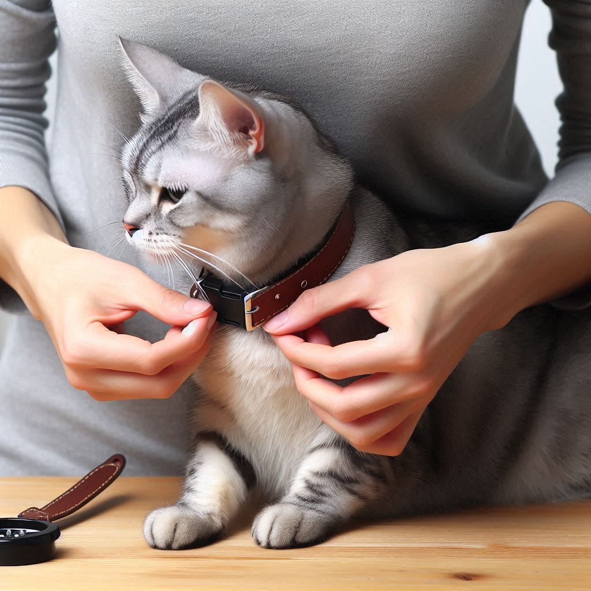
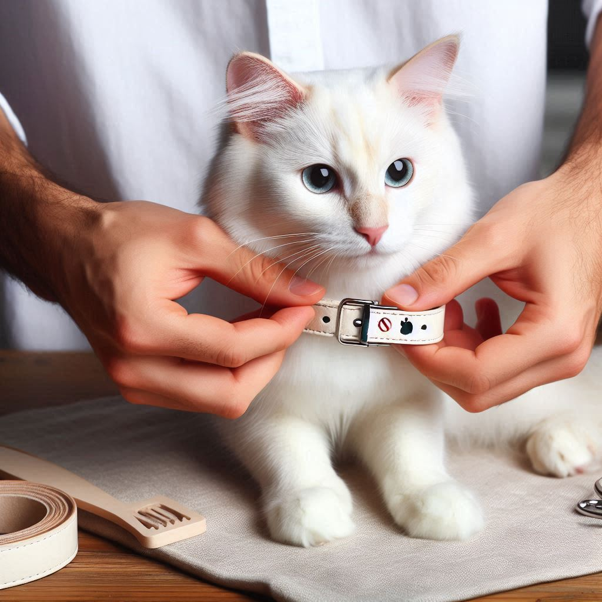
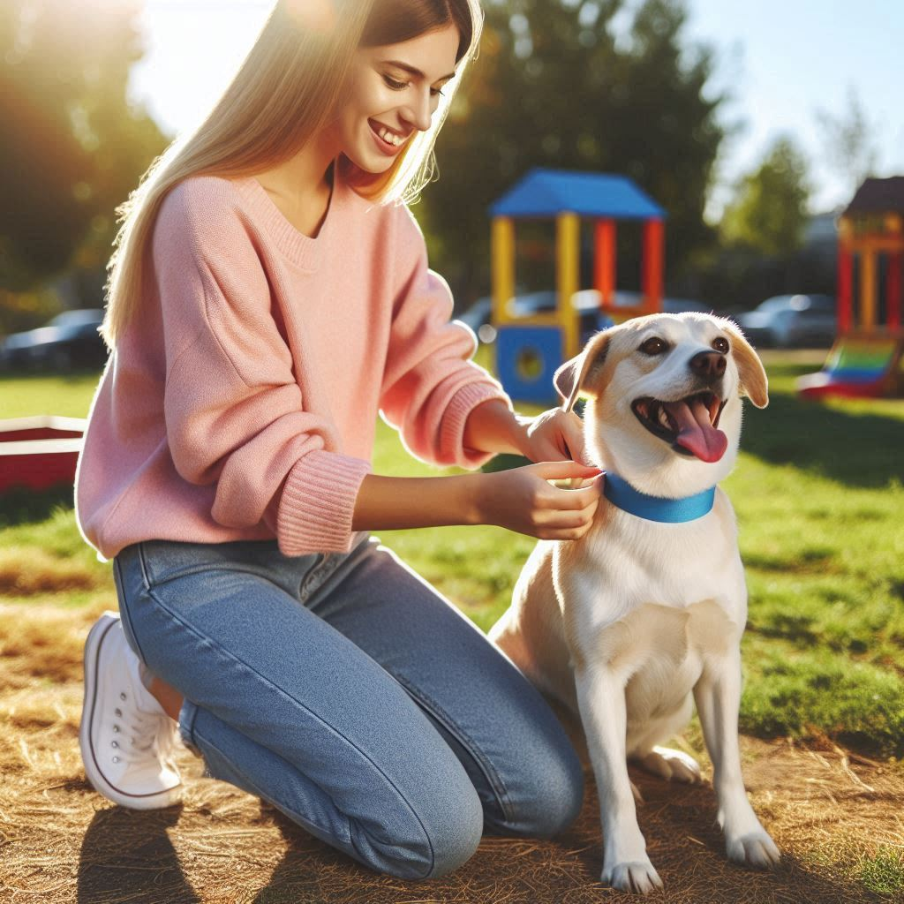

Bienvenido a PET-ID, tu solución integral para el cuidado y seguimiento de mascotas. Nuestro objetivo es proporcionar a los dueños de mascotas las herramientas necesarias para garantizar la seguridad y bienestar de sus compañeros peludos.


